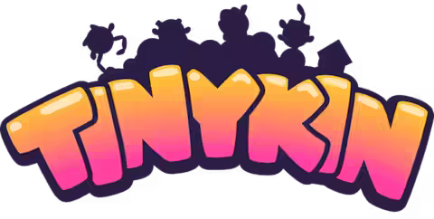

Tinykin

| Release Date: | August 30th, 2022 |
| Genre: | 3D Platformer Collect-a-thon |
| Developer: | Splashteam |
| Platform: | Playstation 5, Xbox Series X, Nintendo Switch, and PC |
| Details: | Steam |
Tinykin is a 3D platformer collect-a-thon that released back in 2022. I remember seeing this game in my Steam recommendations, and heard a couple of positive reviews of the game from some people I follow. Picked it up, and never got around to it till recently (as is with many of my steam games). I went into it expecting a Pikmin-like experience, as the Tinykin that Milo can control, but it's quite different. Rather than being task-management using small creatures to perform tasks, the Tinykin act more like "abilities" for Milo, aiding his exploration of various rooms for various different items.
Gameplay
The game is kind of in an open-level design, where upon entering you're presented with the main quest to obtain a component for the ship you need to return home. However, you can't do it on your own due to your size, so you collect these small creatures called "Tinykin" that have various abilities of their own. Some can carry items around, others can stack on top of each other to make a ladder, other can just explode. Each level you start with none, so you run around collecting Tinykin to reach other areas of the map, finding more Tinykin till you have enough to complete your quest.
While that's pretty straightforward, there's other objectives you can complete in each level. There's a number of side quests that give you museum pieces back in your hub and pollen scattered around the map to collect for your bubble glider. It fills in that time during the level's main quest, almost directing you off the main path to explore. They're like little pieces of candy scattered around, just begging to be collected. While not required to collect, skipping them almost felt incomplete, for some areas you'd only experience for the pollen. It wasn't too much to feel overwhelming, but enough to feel that the level was packed with things to collect. I do wish there was a pollen radar or something, for finding those last pieces of pollen sometimes took forever.
The game scratched that collect-a-thon bug nicely, but the game offers another style of gameplay in terms of speed. You're given a "soapboard" to move around the map quicker, even more so when you grind on the edges of terrain. It's tricky to use, but has the potential to zip around the map and almost feels like it's begging to be beaten as fast as possible. There's time attack challenges that become available in cleared levels that encourage this more directly, but the game also has a built-in timer in the pause menu, telling you exactly how long you've been playing "this run". Speed games aren't entirely my thing, but having that sopaboard made traversing around the levels really fun by zipping around the place.
Story & Worldbuilding
My one regret I have with this game is that I didn't give the NPCs enough time to really talk. The story was rather simple and didn't really grasp me, so I kind of sped through a lot of dialog. However, sometimes I'd stop and catch some of the witty lines they would say, some of which made me audibly laugh. The game seemed filled with references to other media, that I probably missed some big ones that I would've found cool. I think the game has some good writing within the NPCs, but the story itself didn't really grasp me. I did have a sense of curiosity when they started dropping more direct hints towards the owner of the house, but felt, confused by the end. I won't spoil anything, but I didn't really feel much from the story for it to stand out to me.
The levels though, are really clever. The whole game takes place within a house, but almost feels like so much time has passed that the insects have taken it over and turning it into a world of its own. What would be just a half bathroom for us, has been turned into a toilet paper city for beatles, which is odd, but kind of charming? They were well designed, both from a gameplay aspect, and just in feel of those living within it.
Visuals & Audio
I think the visuals really helped in each level's presentation. Each level was designed completely in 3D, but all the characters were 2D billboard, kind of like Paper Mario. It made them stand out to be visible, but was good compromise in capturing the scale of each level, but maintaining the level of detail presented in the characters. It would've been really hard to make 3D models of the characters really fit into the art style and probably would've hindered the gameplay in terms of its platforming. It's very pleasant to look at, and I think it was a great choice of mixing 2D and 3D styles.
The music didn't really capture me while I was playing the game, but listening to it while typing up this page was something that I missed. The tracks on their own are great, providing good ambiance and fits the overall feel of the game. I think it was overshadowed by the sound design, as there's lots of other noises going on during gameplay that kind of muffled the background music. Wish I turned down sound effects a bit more so I could enjoy these tracks with their in-game context.
Overall Thoughts
The game was definitely not what I was expecting, but was still fun nevertheless. I think it's rather short and feels like it encourages multiple playthroughs for getting a faster time, but despite that I think it was fun as-is. I wish there was more uses for pollen to encourage collecting them all and wish some of the Tinykin were rebalanced, as some felt really limiting compared to the others. I never really felt a sense of challenge or danger, so perhaps some hostile insects would've been nice to encourage a bit more risk. It's a fine game, was fun to play and was rewarding finding all the little secrets and moving around the maps at high speeds. Just wish there was a little more to it, make the Tinykin's abilities more interactive beyond the surface. Not sure how much I would recommend it, definitely not for everyone, but not bad if it happens to be on sale.